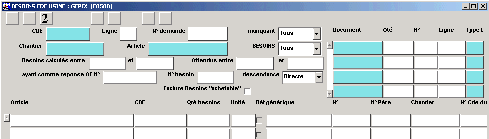
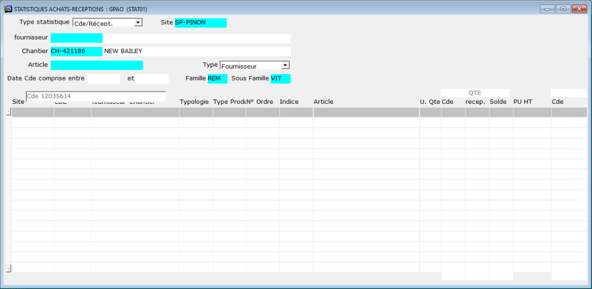
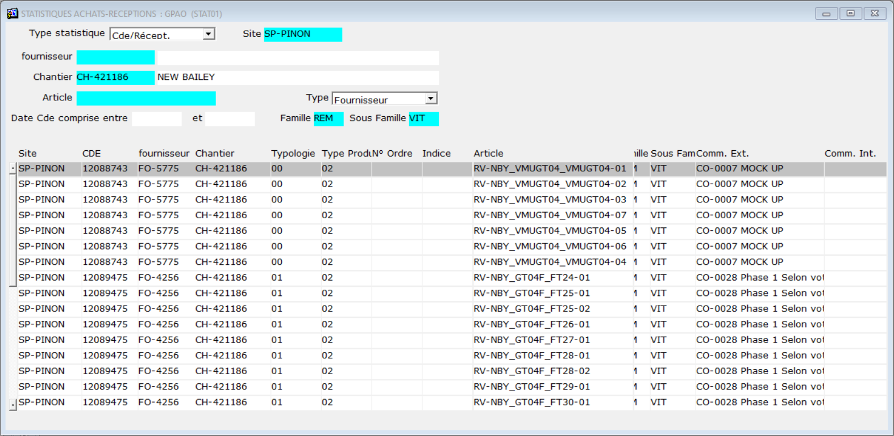
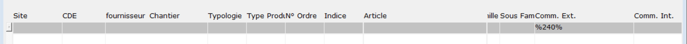

Faire une requête dans les lignes de mouvement avec comme critères
: F2
T.Mvt = SR
T. Doc = BL
Article = Code article complet ou partiel (%REP%) Shift+F2
Comment trouver le numéro de commande usine d'un article à livrer
?
Exemple sur les vitrages, qui peuvent être inclus dans une
nomenclature.
Saisir dans le champ article, le code article complet de l'article
recherché
Appuyer sur entrée jusqu'à l affichage de la liste des besoins
Dans la liste affichée, nous regardons les colonnes N° et N°
Père
si la ligne n'a pas de numéro père, l'article est a
expédier
si la ligne a un numéro père, l'article est inclus dans une
nomenclature
Le numéro de commande usine est lisible dans la colonne CDE.
Ouvrir la commande est voir si il reste des articles a expédier.

Il est possible d'approfondir la recherche en examinant les
mouvements de stocks. (Stock - Consult
mouvement de stocks) Attention au magasin consulté ! (MG-PINON-00 = stocks matière première)
Combien d'articles ont été réceptionnés (ER - BR)
Combien d'articles sont en cours d'achat (EA - CD)
Combien d'articles ont été expédiés (SR ou SR - BL), voire
transférés (SR - TR ou SR - LS)
Combien d'articles seront consommés dans les OF (RO - OF)
Combien d'articles ont été consommés par les OF (SR - FA)
Comment à partir d'une cde uk, retrouver le numéro de cde appro ?
Aller dans Achats > Statistiques Achats Réception
Compléter l'entête avec les informations connues avec au minimum
le Site : SP-PINON et le Chantier. CH-421xxx
Valider par Entrée, le programme va parcourir les commandes selon
le Type sélectionné (par défaut Fournisseur)
il sera peut être nécessaire de relancer une recherche sur les
commandes S/T voire NC.

Une fois la liste affichée, aller sur la droite de l'écran avec l'ascenseur
et afficher le commentaire interne,
faire une recherche (F2)
pour filtrer la liste.
par exemple : %240%
pour chercher dans le commentaire le texte 240

Appuyer sur F2
et saisir %240% dans la colonne commentaire

Appuyer sur Shift+F2
pour afficher la liste filtrée